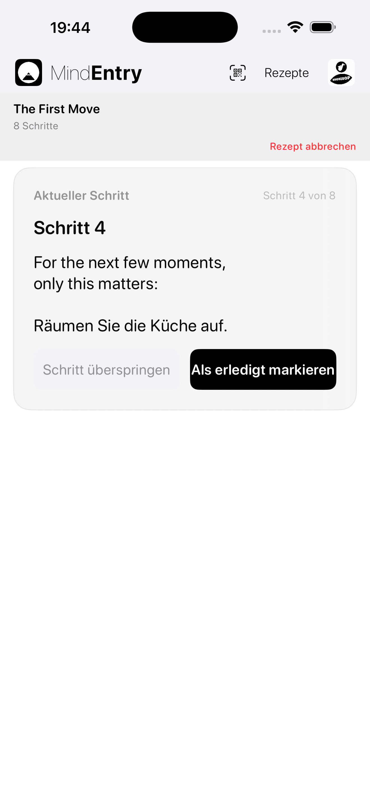
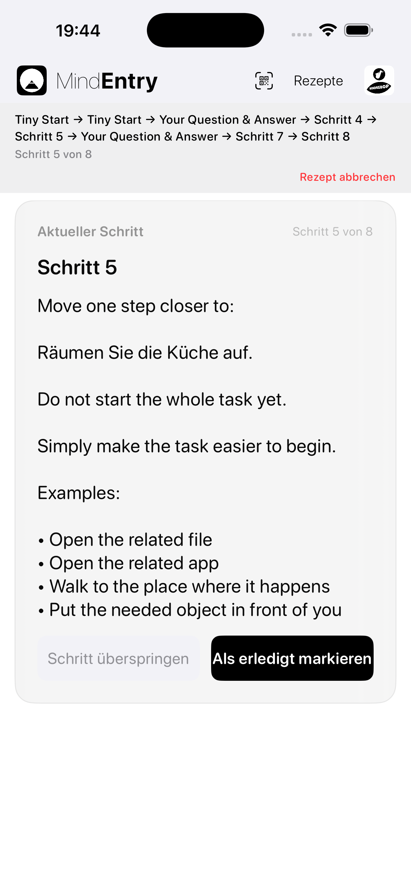
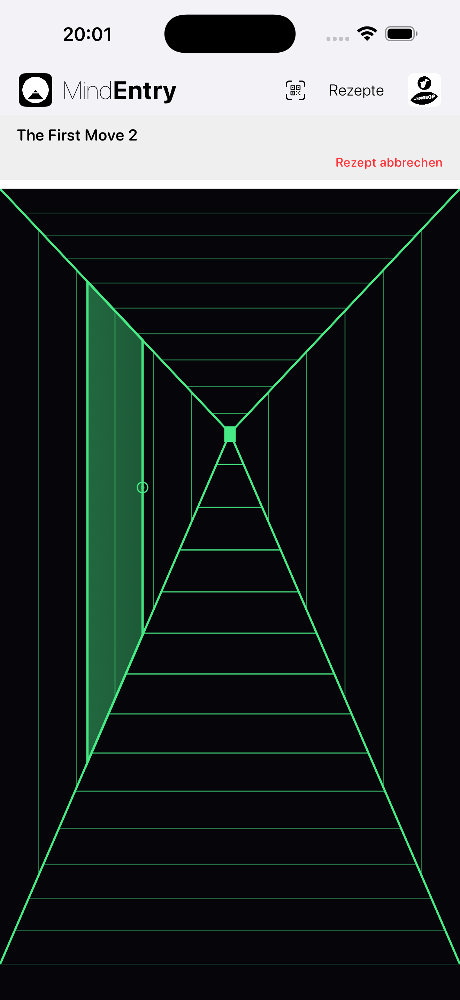
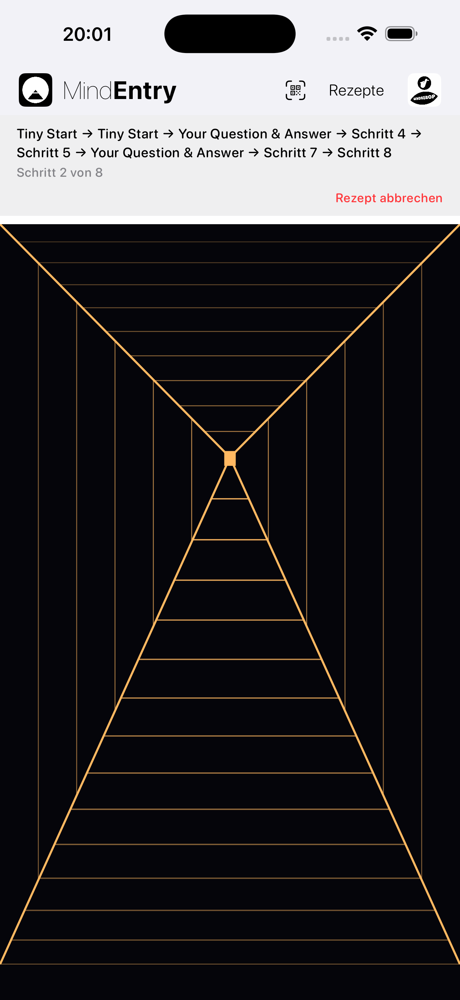

Eine andere Art, sich durch ein Rezept zu bewegen.
Hallway Mode ist ein alternativer Anzeigemodus für MindEntry-Rezepte.
Das Rezept selbst verändert sich nicht. Es verändert sich nur die Art, wie Sie es durchlaufen.
Statt direkt von einer Schrittkarte zur nächsten zu wechseln, schafft Hallway Mode einen ruhigen Raum zwischen den Schritten.
Sie bewegen sich durch einen Flur. Nach einer kurzen Strecke erscheint eine Tür. Wenn Sie die Tür öffnen, gelangen Sie zum nächsten Schritt.
Dasselbe Rezept. Ein anderer Weg hindurch.
Manchmal ist nicht der Schritt selbst der schwierige Teil. Sondern das Gefühl, das gesamte Rezept als Prozess vor sich zu haben.
Hallway Mode reduziert diese Reibung, indem die Aufmerksamkeit nur auf das gerichtet wird, was als Nächstes kommt.
Das Rezept wird zu etwas, das Sie durchlaufen, statt etwas, das Sie betrachten.
Direkt, klar und effizient.
Im Standard Mode wird ein Rezept als Abfolge von Schritten dargestellt.
Er eignet sich am besten, wenn Sie den einfachsten und schnellsten Weg durch ein Rezept möchten.
Schritt → Abschließen → Nächster Schritt
Standard Mode ist hilfreich, wenn der Geist bereit ist, einer Struktur direkt zu folgen.


Ein ruhiger Raum zwischen den Schritten.
Hallway Mode fügt Bewegung zwischen den Schritten hinzu.
Der Flur beginnt ohne sichtbare Tür. Sie bewegen sich vorwärts. Nach einer kurzen, wechselnden Strecke erscheint eine Tür. Durch Antippen des Türknaufs öffnet sich der nächste Schritt.
Schritt → Vorwärtsgehen → Tür → Nächster Schritt
Die nächste Tür erscheint nach einigen Vorwärtsschritten. Die Entfernung verändert sich von Schritt zu Schritt, sodass sich das Rezept weniger wie eine Checkliste und mehr wie ein geführter Durchgang anfühlt.
Sie wählen nicht zwischen mehreren Türen. Sie gehen nicht zurück. Sie springen nicht voraus. Der Flur trägt Sie einfach weiter zu dem, was als Nächstes kommt.


Derselbe Schritt kann sich unterschiedlich anfühlen – je nachdem, wie man ihn erreicht.
Wenn der Geist klar ist, kann eine Liste hilfreich wirken.
Wenn der Geist blockiert, überfordert oder widerständig ist, kann eine Liste wie zusätzliches Gewicht wirken.
Hallway Mode verändert die Frage von:
Wie viele Schritte liegen noch vor mir?
zu:
Wo ist die nächste Tür?
Diese kleine Veränderung kann kognitive Reibung reduzieren.
Statt vom Nutzer zu verlangen, die gesamte Abfolge im Blick zu behalten, gibt Hallway Mode dem Geist nur eine einfache Aufgabe:
Vorwärtsgehen.
Interaktive Rezepte können sich weniger wie ein Formular und mehr wie ein geführter Weg anfühlen.
Stateful Recipes können auf das reagieren, was Sie während des Ablaufs eingeben oder auswählen.
Im Standard Mode kann sich diese Interaktion wie ein strukturierter Ablauf anfühlen:
Frage → Antwort → Nächster Schritt
Im Hallway Mode kann sich dieselbe Interaktion eher wie ein geführter Durchgang anfühlen:
Tür → Frage → Vorwärtsgehen → Nächste Tür
Das ist besonders wichtig, wenn das Denken blockiert ist.
Ein blockierter Geist braucht oft nicht mehr Optionen. Er braucht einen kleineren nächsten Schritt.
Hallway Mode hält das Rezept interaktiv, ohne dass der Nutzer die gesamte Struktur im Kopf behalten muss.
Die meisten Apps konzentrieren sich auf die Schritte selbst.
Hallway Mode konzentriert sich auf den Raum dazwischen.
Dieser Raum erlaubt es, dass ein Schritt endet, bevor der nächste beginnt.
Das Rezept läuft weiterhin in MindEntry. Die Schritte funktionieren weiterhin auf dieselbe Weise. Der Unterschied liegt darin, wie der Geist jeden einzelnen Schritt erreicht.
Hallway Mode macht ein Rezept nicht einfacher, indem Schritte entfernt werden.
Es macht den nächsten Schritt leichter zugänglich.
Copyright © 2026 MINDBEBOP — All rights reserved.